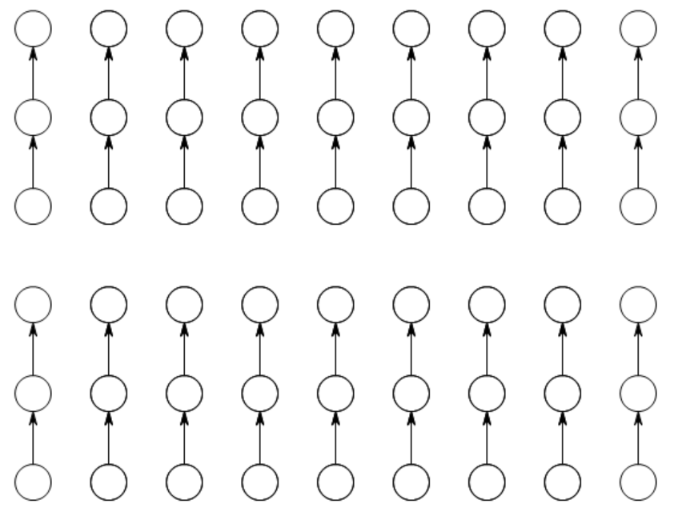
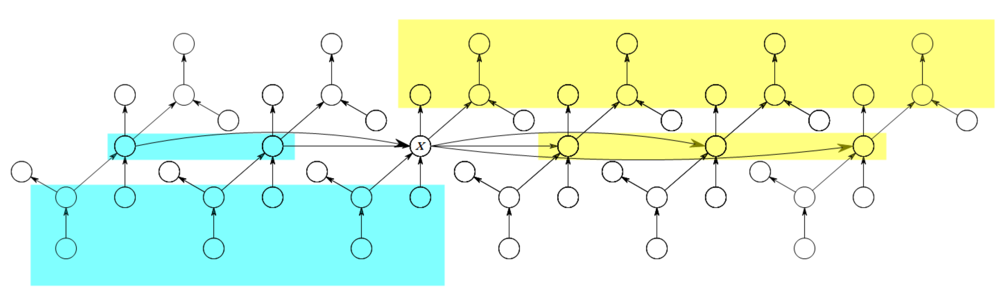

算法导论9 Problems 答案
9-1
a
先直接进行排序，需要\(O(n\lg n)\)的运行时间，然后直接返回最后\(i\)个数。这个算法的总体时间复杂度为\(O(n\lg n)\)。
b
使用算法BUILD-MAX-HEAP对整个数组进行建堆，需要\(O(n)\)的运行时间。然后使用\(i\)次算法EXTRACT-MAX分别弹出当前最大值，每次使用的运行时间为\(O(\lg n)\)。这个算法的总体时间复杂度为\(O(n + i\lg n)\)。
c
先用算法SELECT求出第\(n-i+1\)小的数（也就是第\(i\)大的数），需要\(O(n)\)的运行时间。然后直接对后面\(i\)个元素进行排序后直接返回，这个过程需要\(O(i\lg
i)\)的运行时间。这个算法的总体时间复杂度为\(O(n + i\lg i)\)。
9-2
a
如果第3行代码返回的\(q\)恰好是下标最大值\(r\)，那么\(k=r-p+1\)，由于\(i\le
r-p+1\)是恒成立的，因此必定进入第6行的分支。此时的递归调用相当于是SIMPLER-RANDOMIZED-SELECT(A, p, r, i)，这没有对区间做任何的缩减。因此，在最坏情况下相当于进行无限递归，程序不会终止。
b
算法SIMPLER-RANDOMIZED-SELECT的第3行相当于从区间\(A[p:r]\)中均匀随机选择一个数作为支点，最终划分完成后（假设这是第\(i\)小的数），在第6-7行中选择一个分支继续进行查找。
假设在最坏情况下，每次递归查找的都是大小比较大的那个区间，那么假设\(T(n)\)为运行时间，有
\[T(n)\le \dfrac{1}{n}\cdot\sum_{i=1}^n T(\max\{i,n-i\}) + O(n)\]
整理一下，可以写成
\[T(n)\le \dfrac{1}{n-1}\cdot\sum_{i=1}^{n-1} T(\max\{i,n-i\}) + O(n)\]
考虑消去\(\max\)。如果\(n-1\)是奇数，那么项\(T(n/2)\)会出现\(1\)次，项\(T(n/2+1),T(n/2+2),\dots,T(n-1)\)都会出现\(2\)次；如果\(n-1\)是偶数，那么项\(T((n+1)/2),T((n+1)/2+1),\dots,T(n-1)\)都会出现\(2\)次。
因此为了避免分别讨论，缩放时，\(n-1\)为奇数的情况再添加多一个项，那么可以写出
\[T(n)\le \dfrac{2}{n-1}\cdot\sum_{i=\lceil n/2\rceil}^{n-1} T(i) + O(n)\]
假设\(T(n)\le cn\)，那么有
\(\begin{aligned} T(n)&\le \dfrac{2}{n-1}\cdot\sum_{i=\lceil n/2\rceil}^{n-1} T(i) + O(n)\\ &\le \dfrac{2c}{n-1} \cdot \dfrac{(\lceil n/2\rceil+n-1)(n-\lceil n/2\rceil)}{2} + O(n)\\ &=c\cdot \dfrac{(\lceil n/2\rceil+n-1)(n-\lceil n/2\rceil)}{n-1} + O(n)\\ &\le c\cdot \dfrac{(n/2+1+n-1)(n-n/2-1)}{n-1} + O(n)\\ &=\dfrac{3cn(n-2)}{4(n-1)} + O(n) \\ &\le\dfrac{3cn(n-2)}{4(n-2)} + O(n) \\ &=\dfrac{3}{4} cn+O(n)\\ &\le cn & \qquad(A) \end{aligned}\)
其中步骤\((A)\)使用了如下假设：\(c\)足够大，使得\(\dfrac{cn}{4}\)的渐进增长快于\(O(n)\)。
因此有\(T(n)=O(n)\)。
9-3
这里的中位数默认是第\(\left\lceil\dfrac{n}{2}\right\rceil\)小的数。
需要注意的是，通过哈希表，我们可以把相同的\(x\)合并成一个，并且其权值进行相加。只要哈希表的性能足够优秀，那么这个预处理需要\(\Theta(n)\)的时间复杂度完成。因此在接下来的过程中，我们默认\(x\)是两两不同的。
a
小于中位数的数有\(\left\lceil\dfrac{n}{2}\right\rceil-1\)个。那么这些数的权值之和为\(\dfrac{1}{n}\left(\left\lceil\dfrac{n}{2}\right\rceil-1\right)\)。可以发现，当\(n\)为偶数时，权值和为\(\dfrac{1}{2}-\dfrac{1}{n}\)，当\(n\)为奇数时，权值和为\(\dfrac{n-1}{2n}\)。无论那种情况都小于\(\dfrac{1}{2}\)。
大于中位数的数有\(n-\left\lceil\dfrac{n}{2}\right\rceil=\left\lfloor\dfrac{n}{2}\right\rfloor\)个。那么这些数的权值之和为\(\dfrac{1}{n}\left\lfloor\dfrac{n}{2}\right\rfloor\)。无论\(n\)取何值，权值之和总小于等于\(\dfrac{1}{2}\)。
因此，\(\{x\}\)的普通中位数就是这种特殊情况下的带权中位数。
b
算法GET-WEIGHTED-MEDIAN1给出了求取一个带权中位数的算法。其中排序算法的时间复杂度假设为\(O(n\lg n)\)。
1 | // 数组A中的每一个元素都有两个属性，分别为x和w，x表示数值，w表示权重。 |
直接排完序后，从小到大将所有数的权值逐渐相加，将第一个大于等于0.5的数直接返回。如果输入是合法的（权值之和为\(1\)），那么第7行的代码return NIL不会被运行到。
c
整个算法通过如下伪代码给出给出。子程序RANDOMIZED-PARTITION-WEIGHTED和PARTITION-WEIGHTED与原版的行为基本相同，多统计了一个权值之和。它们的时间复杂度为\(\Theta(n)\)。
算法MEDIAN-WEIGHT的时间复杂度\(T(n)\)的分析过程和9-2-b完全一致，为\(T(n)=O(n)\)。第5行代码第一次对整个数组进行了一次划分，因此有\(T(n)=\Omega(n)\)。那么整个算法的时间复杂度为\(T(n)=\Theta(n)\)。
1 | // PARTITION-WEIGHTED返回两个值，一个是划分后这个数的下标q，一个是A[p : q]中所有数的权值之和。 |
d
假设\(x\)是目前的最小值解，且\(x\)不是带权中位数，即不满足带权中位数条件\(\displaystyle{\sum_{x_i< x_k} w_i<\dfrac{1}{2},\sum_{x_i> x_k} w_i\le \dfrac{1}{2}}\)中的一个。
不失一般性，假设不满足第\(2\)个条件，那么有\(\displaystyle{\sum_{p_i> x} w_i-\sum_{p_i< x} w_i>0}\)。
令\(\displaystyle{k=\min_{i=1}^n\{|x-p_i|\}}\)，那么取\(l\)使得\(l\in [0,k)\)。从\(x\)向右迈出一小步\(l\)，那么此时有
\(\begin{aligned} \sum_{i=1}^n w_i d(x+l,p_i) &= \sum_{p_i<x} w_i(x+l-p_i) + \sum_{p_i>x} w_i(p_i-x-l)\\ &=\sum_{p_i<x} w_i(x-p_i)+\sum_{p_i>x} w_i(p_i-x) - l\left(\sum_{p_i>x} w_i-\sum_{p_i<x} w_i\right)\\ &=\sum_{i=1}^n w_i d(x,p_i)- l\left(\sum_{p_i>x} w_i-\sum_{p_i<x} w_i\right)\\ &\le \sum_{i=1}^n w_i d(x,p_i) \end{aligned}\)
由此可见，得到了一个更优秀的解\(x+l\)。
当不满足第\(1\)个条件时，则是按反方向走，证明方法类似。
因此，当\(x\)是带权中位数时，得到的解是最优的。
e
由于\(\displaystyle{\sum_{i=1}^n d(p,p_i)=\sum_{i=1}^n w_i(|x-x_i|+|y-y_i|)=\left(\sum_{i=1}^n w_i|x-x_i|\right)+\left(\sum_{i=1}^n w_i|y-y_i|\right)}\)，可以分别将两个维度的坐标看成是两个独立的一维问题进行解决。分别求出\(x\)坐标和\(y\)坐标后进行组合即可。
9-4
a
这个算法由SELECT'给出。基本思想是先一对对元素进行比较并且绑定，完成\(\left\lfloor\dfrac{n}{2}\right\rfloor\)次比较后，递归划分出\(\left\lceil\dfrac{n}{2}\right\rceil\)个小元素中前\(i\)小的元素。划分好后，第\(i\)小数必定是这\(i\)对数中的第\(i\)小数。
1 | SELECT'(A, n, i) |
b
我们使用代入法来证明\(U_i(n)-n=O(T(2i)\lg(n/i))\)。假设\(U_i(n) -n\le c \cdot T(2i)\cdot \lg(n/i)\)。那么有
\(\begin{aligned} U_i(n)-n&= (U_i(\lceil n/2\rceil)-\lceil n/2\rceil)+T(2i)\\ &\le c\cdot T(2i)\cdot \lg(\lceil n/2\rceil/i) + T(2i)\\ &\le c\cdot T(2i)\cdot(\lg( n/2/i) + 1) & \qquad(A)\\ &\le c\cdot T(2i)\cdot(\lg(n/i)) \\ \end{aligned}\)
其中，步骤\((A)\)假设了\(c>1\)，并且足够大到消去符号\(\lceil\rceil\)。
因此，\(U_i(n)-n=O(T(2i)\lg(n/i))\)，即\(U_i(n)=n+O(T(2i)\lg(n/i))\)。
c
根据题目9-4-b的结论，可以得出：\(\exists c,n_0>0,\forall n>n_0,0\le U_i(n)-n\le c\cdot S(2i)\cdot \lg(n/i)\)恒成立。
那么有
\(\begin{aligned} U_i(n)-n &\le c\cdot S(2i)\cdot \lg(n/i)\\ &= c\cdot S(2i)\cdot (\lg n-\lg i)\\ &\le c\cdot S(2i)\cdot \lg n \end{aligned}\)
构造一个新常数\(c'=c\cdot S(2i)\)，那么这对常数\(\{c',n_0\}\)说明\(U_i(n)-n=O(\lg n)\)，即\(U_i(n)=n+O(\lg n)\)。
d
当\(k\ge 2\)时，\(i=n/k<n/2\)。因此根据题目9-4-b的结论，代入\(i=n/k\)，可以得到\(U_i(n)=n+O(S(2n/k)\lg k)\)。
9-5
a
和分析RANDOMIZED-QUICKSORT时的思想一致，如果我们选择的支点处在\(\min\{z_i,z_j\}\)和\(\max\{z_i,z_k\}\)之间时，才会有讨论的意义。否则，每次划分区间时，这\(3\)个元素仍然处在同一个区间内部，\(z_j\)和\(z_k\)是否被比较仍然未知。并且按照上面的思想，\(z_j\)和\(z_k\)是否被比较，当且仅当\(z_j,z_k\)处在同一区间内，并且着两个数之一成为支点\(q\)。那么分别考虑三种情况：
当\(z_i< z_j< z_k\)时，如果支点\(q\in\{z_j,z_k\}\)，那么就会产生对\(z_j,z_k\)的比较。如果\(q\in [z_i,z_j)\)，那么下一层递归将会进入区间\([z_i,q),z_j,z_k\)永远不会被比较。如果\(q\in (z_j,z_k)\)，那么\(z_j\)和\(z_k\)将会被分隔开，永远不会被比较。此时\(E[X_{ijk}]=\dfrac{2}{k-i+1}\)。
当\(z_j< z_k< z_i\)时，此时和情况1类似。此时\(E[X_{ijk}]=\dfrac{2}{i-j+1}\)。
当\(z_j\le z_i\le z_k\)时，类似的，如果\(q\in (z_j,z_k)\)，那么\(z_j\)和\(z_k\)将会被分隔开，永远不会被比较；否则必定会被比较，此时\(E[X_{ijk}]=\dfrac{2}{k-j+1}\)。
因此有：
\(E[X_{ijk}]= \left \{\begin{aligned} &\dfrac{2}{k-i+1} & & \text{if}\quad z_i< z_j< z_k \\ &\dfrac{2}{i-j+1} & & \text{if}\quad z_j< z_k< z_i \\ &\dfrac{2}{k-j+1} & & \text{if}\quad z_j\le z_i\le z_k \\ \end{aligned}\right.\)
b
根据示性随机变量\(X_i\)的定义，有\(\displaystyle{X_i=\sum_{j=1}^{n-1}\sum_{k=j+1}^n X_{ijk}}\)。那么有
\(\begin{aligned} E[X_i]&=E\left[\sum_{j=1}^{n-1}\sum_{k=j+1}^n X_{ijk}\right]\\ &=\sum_{j=1}^{n-1}\sum_{k=j+1}^n E[X_{ijk}]\\ &=\sum_{j=i+1}^{n-1}\sum_{k=j+1}^n E[X_{ijk}] + \sum_{j=1}^{i-2}\sum_{k=j+1}^{i-1} E[X_{ijk}] + \sum_{j=1}^{i}\sum_{k=i}^n E[X_{ijk}]\\ &=\sum_{j=i+1}^{n-1}\sum_{k=j+1}^n \dfrac{2}{k-i+1} + \sum_{j=1}^{i-2}\sum_{k=j+1}^{i-1} \dfrac{2}{i-j+1} + \sum_{j=1}^{i}\sum_{k=i}^n \dfrac{2}{k-j+1}\\ &=2\left(\sum_{j=i+1}^{n-1}\sum_{k=j+1}^n \dfrac{1}{k-i+1} + \sum_{j=1}^{i-2}\sum_{k=j+1}^{i-1} \dfrac{1}{i-j+1} + \sum_{j=1}^{i}\sum_{k=i}^n \dfrac{1}{k-j+1}\right)\\ &=2\left(\sum_{k=i+2}^{n}\dfrac{k-i-1}{k-i+1} + \sum_{j=1}^{i-2}\dfrac{i-j-1}{i-j+1} + \sum_{j=1}^{i}\sum_{k=i}^n \dfrac{1}{k-j+1}\right)\\ &\le 2\left(\sum_{k=i+1}^{n}\dfrac{k-i-1}{k-i+1} + \sum_{j=1}^{i-2}\dfrac{i-j-1}{i-j+1} + \sum_{j=1}^{i}\sum_{k=i}^n \dfrac{1}{k-j+1}\right) \end{aligned}\)
c
由题目9-5-b的推导继续进行。
\(\begin{aligned} E[X_i]&\le 2\left(\sum_{k=i+1}^{n}\dfrac{k-i-1}{k-i+1} + \sum_{j=1}^{i-2}\dfrac{i-j-1}{i-j+1} + \sum_{j=1}^{i}\sum_{k=i}^n \dfrac{1}{k-j+1}\right)\\ &\le 2\left(\sum_{k=i+1}^{n} 1 + \sum_{j=1}^{i-2}1 + \sum_{j=1}^{i}\sum_{k=i}^n \dfrac{1}{k-j+1}\right)\\ &= 2\left(n-2 + \sum_{j=1}^{i}\sum_{k=i}^n \dfrac{1}{k-j+1}\right)\\ &= 2\left(n-2 + \sum_{c=1}^n \dfrac{1}{c}\cdot\sum_{1\le j\le i,i\le j+c-1\le n} 1\right)\\ &\le 2\left(n-2 + \sum_{c=1}^n \dfrac{1}{c}\cdot c\right)\\ &\le 2(n-2+n)\\ &\le 4n \end{aligned}\)
d
算法RANDOMIZED-SELECT的整个过程是围绕子程序RANDOMIZED-PARTITION进行的，比较过程就在这个子程序中进行。
根据题目9-5-c的结论，所有调用子程序RANDOMIZED-PARTITION的过程中，总期望比较次数不超过\(4n\)。因此算法RANDOMIZED-SELECT的时间复杂度为\(O(n)\)。
9-6
假设单个组的大小为\(2k+1\)，其中\(k\)是一个正整数，且是常数。
a
此时意味着有前提条件：\(k\ge 2\).
前11行代码，无非就是将所有为\(5\)的常量转化成\(2k+1\)。这一段的代码运行时间仍然为\(\Theta(n)\)。
第12-13行代码对每组\(2k+1\)个元素进行原地排序。由于每组内部元素数量相同，一共有\(\Theta(n)\)组，这一段的运行时间仍然为\(\Theta(n)\)。
第16行对中间的一组再进行一次调用，产生了\(T(n/(2k+1))\)的开销。
第17行对数组进行了一次划分，这一段的运行时间仍然为\(\Theta(n)\)。
总而言之，上面这部分算法内部开销的时间复杂度为\(\Theta(n)\)。
第20-24行递归进入所划分的区间。按照这种划分方法，可以知道，第16行中的\(x\)至少有\(\dfrac{n\cdot (k+1)}{2\cdot(2k+1)}=\dfrac{k+1}{4k+2}n\)个数比它大，至少有\(\dfrac{k+1}{4k+2}n\)个数比它小。因此每次进行下一次递归时，至多可以去除\(\dfrac{k+1}{4k+2}n\)个数。假设\(T(n)\)为对\(n\)个元素进行选择的运行时间，那么有
\[T(n)\le T(n/(2k+1))+T((3k+1)n/(4k+2))+\Theta(n)\]
使用代入法，假设\(T(n)\le cn\)，那么有
\(\begin{aligned} T(n)&\le T(n/(2k+1))+T((3k+1)n/(4k+2))+\Theta(n)\\ &\le \dfrac{c}{2k+1} n+\dfrac{c(3k+1)}{4k+2}n+\Theta(n)\\ &=cn-\dfrac{c(k-1)}{4k+2}n+\Theta(n)\\ &\le cn &\qquad(A) \end{aligned}\)
其中，步骤\((A)\)假设了\(c\)足够大，以至于项\(\dfrac{c(k-1)}{4k+2}n\)的渐进增长速度超过\(\Theta(n)\)。并且，由于\(k\ge 2\)，因此这个项是恒正的。
因此有\(T(n)=O(n)\)。
由于第17行对数组进行了一次\(\Theta(n)\)的划分，因此说明\(T(n)=\Omega(n)\)。
因此最终有\(T(n)=\Theta(n)\)。
b
此时意味着有前提条件：\(k=1\).
那么\(T(n)\)可以写成
\[T(n)\le T(n/3)+T(2n/3)+\Theta(n)\]
由于\(k=1\)，项\(\dfrac{c(k-1)}{4k+2}n\)的值恒为\(0\)，因此题目9-6-a的结论不适用。
那么假设\(T(n)\le cn\lg n\)，有
\(\begin{aligned} T(n)&\le T(n/3)+T(2n/3)+\Theta(n)\\ &\le \dfrac{cn}{3} \lg\dfrac{cn}{3}+\dfrac{2n}{3} \lg\dfrac{2n}{3} +\Theta(n)\\ &=cn\lg n-\dfrac{c}{3}\cdot \lg \dfrac{27}{4}\cdot n + \Theta(n)\\ &\le cn\lg n &\qquad(A) \end{aligned}\)
其中，步骤\((A)\)假设了\(c\)足够大，以至于\(\dfrac{c}{3}\cdot \lg \dfrac{27}{4}\cdot n\)的渐进增长速度超过\(\Theta(n)\)。
因此有\(T(n)=O(n\lg n)\)。
c
前11行代码是为了调整整个数组的长度是\(9\)的倍数。
第12-13行代码则是对组内的所有元素进行排序，每组有\(3\)个元素。排完序后的示意图如下：

第16-17行代码则是对大组中的所有中位数再次进行排序，由于排序元素数量恒定为\(3\)个。排完序后的示意图如下：

其中，蓝色区域表示比\(x\)小的数，黄色区域表示比\(x\)大的数。
因此可以发现，整个序列可以划分成大小为\(9\)的组，也就是说一共有\(\dfrac{n}{9}\)组。其中一半的大组至少有\(4\)个数比\(x\)小，一半的大组至少有\(4\)个数比\(x\)大。那么在每一次的划分过程中，我们可以排除掉至少\(\dfrac{n\cdot 4}{2\cdot 9}=\dfrac{2}{9}n\)个数。
由此继续进行划分下去，最终可以成功找到一个第\(i\)大的数。
d
第1行的while循环次数最多为\(8\)，内部嵌套的for循环长度为\(\Theta(n)\)，因此前11行代码的运行时间为\(\Theta(n)\)。
第12-13行代码则是对组内的所有元素进行排序，由于排序元素数量恒定为\(3\)个，组数为\(\Theta(n)\)。因此第12-13行代码的运行时间为\(\Theta(n)\)。
第16-17行代码则是对大组中的所有中位数再次进行排序，由于排序元素数量恒定为\(3\)个，大组的组数也是\(\Theta(n)\)。因此第12-13行代码的运行时间为\(\Theta(n)\)。
第20行对中间的一个大组再进行一次调用，产生了\(T(n/9)\)的开销。
第21行对数组进行了一次划分，这一段的运行时间仍然为\(\Theta(n)\)。
第23-28行递归进入所划分的区间。按照题目9-6-c的描述，这个开销最大为\(T(7n/9)\)。
那么可以写出\(T(n)\)的递推关系式：
\[T(n)\le T(n/9)+T(7n/9)+\Theta(n)\]
进一步化简，有
\(\begin{aligned} T(n)&\le T(n/9)+T(7n/9)+\Theta(n)\\ &\le cn/9+7cn/9+\Theta(n)\\ &=cn-cn/9+\Theta(n)\\ &\le cn &\qquad(A) \end{aligned}\)
其中，步骤\((A)\)假设了\(c\)足够大，以至于项\(cn/9\)的渐进增长速度超过\(\Theta(n)\)。
因此有\(T(n)=O(n)\)。